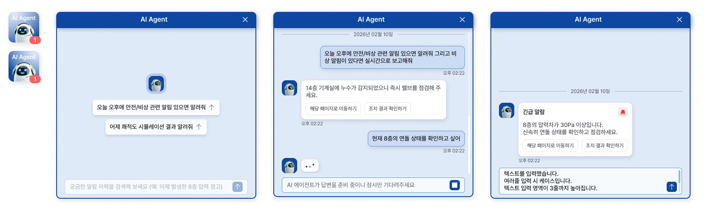
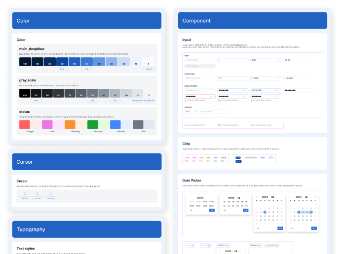
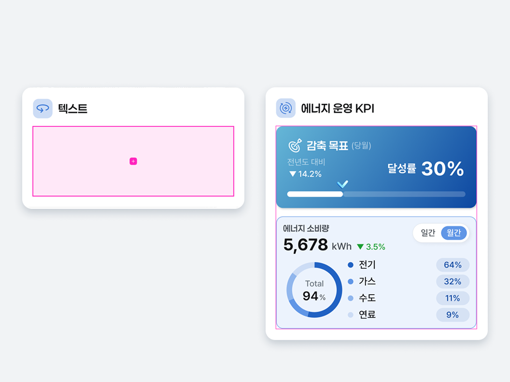
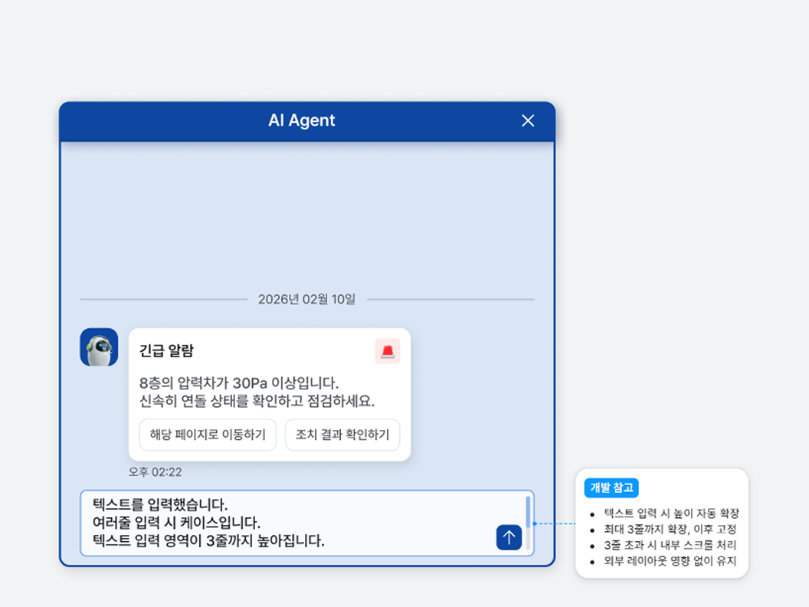
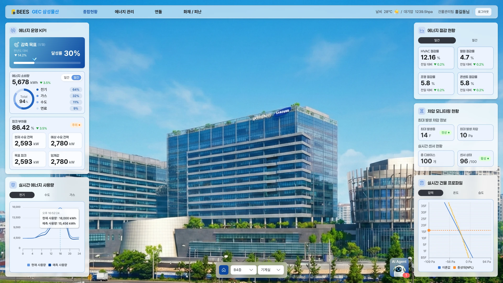
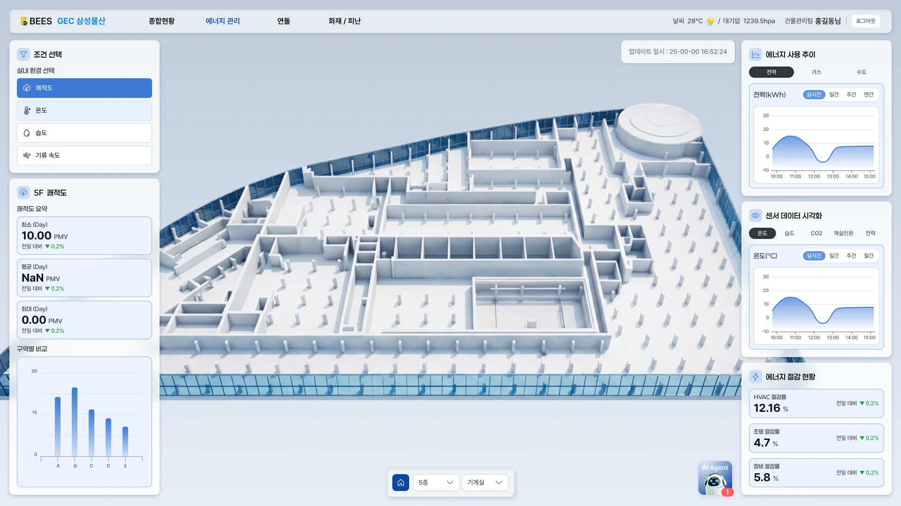
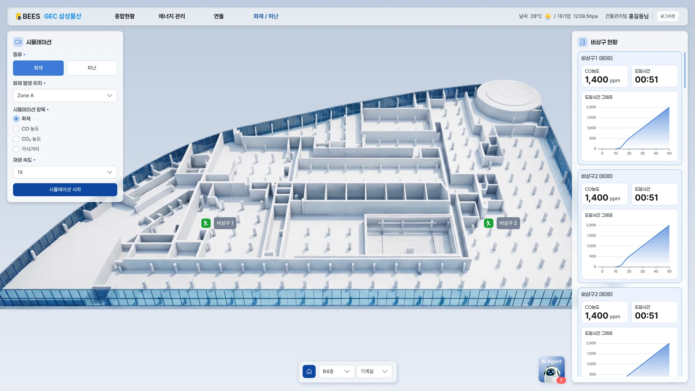
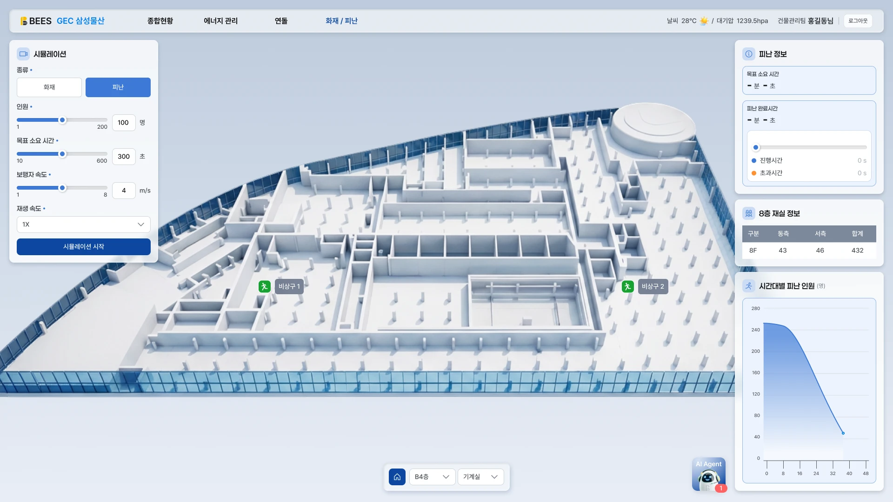

01
한 화면 안의 확인 → 판단 → 실행
- 문제
- 화면 전환이 많아질수록 상태 확인과 조치 사이의 흐름이 끊겨요.
- 판단
- 확인한 상태를 유지한 채 다음 행동으로 이어지는 것을 기준으로 삼았어요.
- 설계
- 상태 정보와 필요한 조치를 같은 화면에 두어, 확인 → 판단 → 실행이 한 흐름으로 이어지게 했어요.
Digital Twin · Energy Management
공간을 따라 읽는 에너지 관리 플랫폼
Product Designer

01Context
건물·층·설비의 에너지 데이터를 디지털 트윈에 연결한 관리 플랫폼이에요. 운영자는 이 화면에서 상태를 확인하고 필요한 조치를 시작해요.
02Core Problem
기존 시스템은 에너지 데이터를 기능 단위로 나눠 보여줬어요. 그래서 수치를 볼 때마다 그 값이 어느 건물·층·설비의 것인지 다시 해석해야 했어요.
데이터가 기능 단위로 나뉘어 있어, 어느 공간의 값인지 함께 읽기 어려웠어요.
상태를 확인하는 화면과 조치하는 화면이 나뉘면 확인한 맥락이 이어지지 않아요.
그래서, 이렇게 봤어요
기능 이름을 익히게 하기보다, 운영자가 이미 알고 있는 실제 공간을 따라 정보를 찾게 하는 것이 먼저라고 봤어요.
03Design Direction
기능별 메뉴에서 찾게 하기보다
건물 → 층 → 설비의 위계를 따라 찾게 했어요
확인과 조치를 다른 화면으로 나누기보다
확인한 상태를 유지한 채 다음 행동으로 이었어요
많은 지표를 한 화면에 담기보다
어느 공간의 어떤 상태인지가 먼저 읽히게 했어요
04Before & After
탐색 기준과 관제 흐름, 두 가지를 바꿨어요.
Before
After
01
기능 이름을 몰라도, 실제 공간을 따라 원하는 설비까지 이동할 수 있어요.
Before
After

02제품 기능 · AI 관제 에이전트
알림을 확인하는 데서 끝나면, 대응할 다음 행동을 다시 찾아야 해요.
05Key Decisions
상태를 확인한 화면에서 바로 판단하고 실행할 수 있도록 흐름이 끊기는 지점을 줄이고, 구현 기준은 Figma 안에서 바로 확인하게 했어요.
01
컬러·타이포그래피 기준을 표준화하고 재사용 컴포넌트로 묶어, 화면마다 달랐던 UI를 같은 규칙으로 맞췄어요.

Figma 슬롯으로 여러 UI를 하나의 패턴 안에서 조합해, 같은 구조를 반복해서 만들지 않게 했어요.

UI 상태·인터랙션·예외 케이스를 주석에 함께 적어, 구현 기준을 화면에서 바로 확인하게 했어요.

06Key Screens
주요 화면을 사용 흐름에 따라 살펴보세요.
운영 중인 건물의 상태를 먼저 파악해요.

기능 이름보다 건물이라는 공간을 출발점으로 삼아, 확인할 대상을 먼저 정하게 했어요.
확인할 층과 환경 조건으로 범위를 좁혀요.

공간 모델과 해당 공간의 수치를 함께 두어, 지표가 어느 위치의 상태인지 연결해서 읽게 했어요.
일상 관제에서 위험 상황의 확인으로 전환해요.

같은 공간 맥락에서 위험 상황을 살펴보도록, 운영과 시뮬레이션의 탐색 기준을 맞췄어요.
위험 확인에 이어 피난 상황을 검토해요.

공간을 다시 찾기보다 확인한 위치를 기준으로 다음 대응을 검토하도록 흐름을 이었어요.
07AI Workflow예시
이 프로젝트의 AI 활용 기록을 채울 자리예요. ‘예시’로 표시한 칸을 실제로 AI에 맡긴 일로 바꿔 주세요.
01요구사항 정리
AI가 도운 일예시요구사항을 기능·공간·상태·예외 조건으로 나눈 초안을 만들었어요.
직접 판단한 일건물 → 층 → 설비의 위계를 탐색 기준으로 정했어요.
02화면 비교
AI가 도운 일예시비슷한 운영 화면의 상태와 권한 차이를 먼저 비교했어요.
직접 판단한 일상태 정보와 필요한 조치를 같은 화면에 두기로 정했어요.
03검수
AI가 도운 일예시빈 화면·오류·권한 같은 확인 항목의 초안을 정리했어요.
직접 판단한 일예시실제 화면을 보면서 최종 품질을 직접 확인했어요.
08Outcome
기능별로 흩어져 있던 데이터와 운영 흐름을 이렇게 정리했어요.
기능별로 흩어진 데이터를 건물·층·설비 단위로 찾아요.
상태 확인 → 판단 → 실행이 한 화면에서 이어져요.
슬롯 컴포넌트와 주석으로 같은 구조의 반복 제작과 구현 해석 차이를 줄였어요.
많은 지표를 한 화면에 담는 것보다, 어느 공간의 어떤 상태인지가 먼저 읽히는 구조가 운영 화면의 출발점이었어요. 확인과 조치를 같은 맥락에 두는 것을 운영 화면 설계의 기준으로 삼아요.
Next Project
ESG 데이터를 목표와 보고서로 잇는 관리 플랫폼